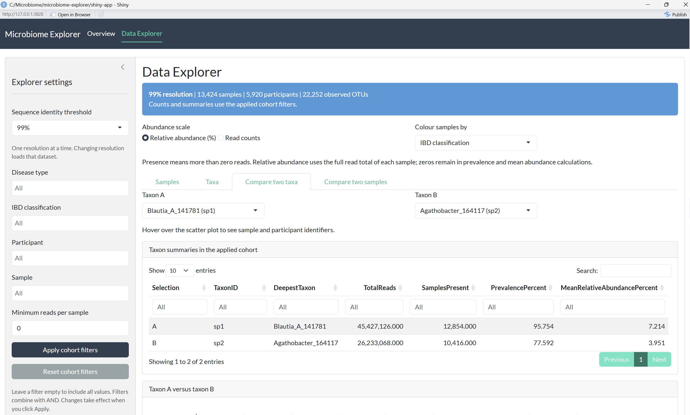

Research Assistant
Dr. Michael Surette Laboratory | McMaster University
I support microbiome research by preparing complex datasets, evaluating statistical approaches, and developing tools that help researchers explore their data. Working with the IMAGINE study, I bring statistical analysis and programming skills to questions about how microbial communities differ across patient samples.
My Contributions
- Building a reliable foundation for research. I organize and document large datasets and create reusable workflows that keep analyses consistent, making it easier for the lab to revisit, extend, and build on the work.
- Evaluating the strength of analytical results. I compare statistical approaches to assess whether observed patterns remain consistent when the data is prepared or analyzed differently. This helps the lab understand how analytical choices affect its findings.
- Making findings easier to understand. I communicate methods and results through reports, visualizations, summary tables, and presentations, supporting discussion with researchers from biomedical backgrounds.
R Shiny Data Explorer
I developed an interactive R Shiny application that brings microbiome data exploration into a visual interface. Researchers can use filters, summaries, and plots to investigate the data without editing R scripts. The application makes the work easier to review and supports discussion of patterns and follow-up research questions.

Future Work
My next step is to connect microbiome patterns with patient information, helping the lab explore whether differences in microbial communities relate to clinical or demographic characteristics and identify questions for further investigation.
← Back to homepage